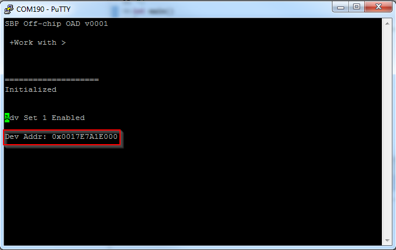
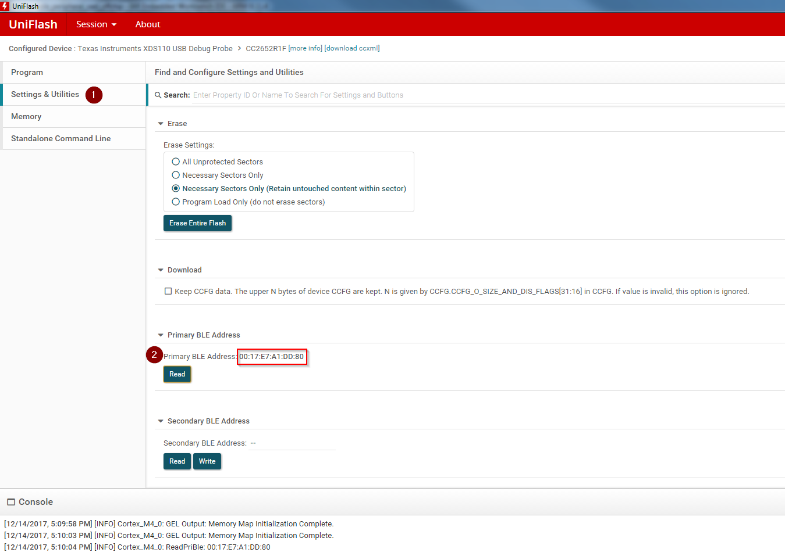
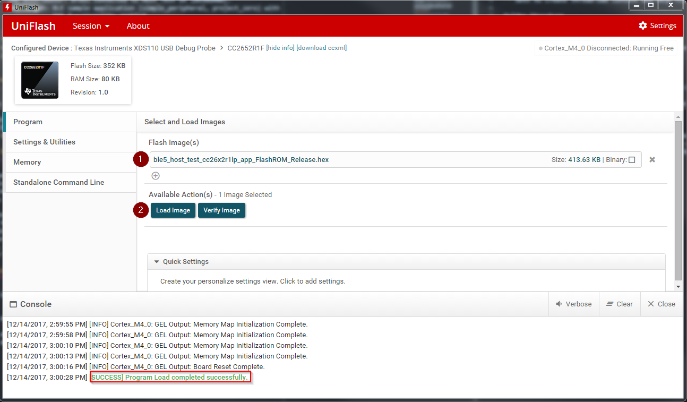
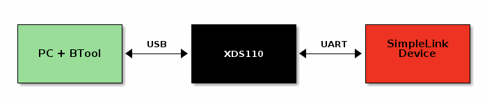
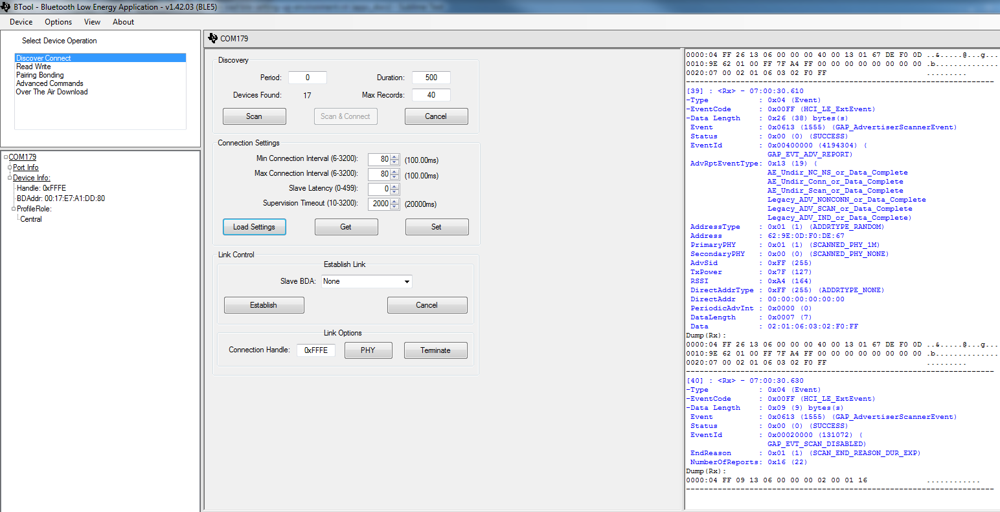

Setting up the BLE OAD Environment¶
This section will cover the steps required to setup a BLE OAD environment.
The BLE OAD topology is described below. Refer to Figure 89. for a review of the devices involved in an OAD.
OAD Distributor: BTool connected to Host Test on CC2640R2F LaunchPad.
OAD Target: BLE sample application (
simple_peripheral) with OAD functionality enabled.Note
TI provides mobile applications that support OAD, these are outside of the scope of the OAD guide. Refer to the Quick Start Guide for more information.
Prerequisites¶
This section requires the following hardware and software components
SimpleLink CC2640R2 SDK installed
OAD Target Setup¶
In order to perform a BLE OAD, an OAD capable image must be loaded onto the OAD target device. This section will cover the steps required to load the CC2640R2F LaunchPad with an OAD enabled BLE image.
Navigate to the
simple_peripheral_oad_offchiporsimple_peripheral_oad_onchipfolder inside the BLE-Stack.Import the project into the workspace of your selected IDE.
See the Quick Start Guide for instructions on how to work with your selected IDE.
Navigate to
bim_offchiporbim_onchipfolder (respective to your chosen project) inside thenortosfolder.
If
bim_onchipis used, enable theAUTHENTICATE_PERSISTENT_IMGdefine in the project’s .opt file if an authenticated persistent application is desired. By default, this is enabled.Import the project into the workspace.
Select the proper build configuration based on security needs:
FlashROM: will use security and is the default configuration
FlashROM_unsecure: will not use securityBe sure that all projects configurations are in sync. If one
_unsecureproject is used, all other projects should use the unsecure flavor as well.Based on the project configuration, the proper version of the OAD Image Tool will be used. If security is enabled the signature is automatically added to the image.
Warning
OAD security is only supported using off-chip OAD.
(on-chip OAD only) Build and flash the persistent app project
Warning
The build steps must be done in order, or errors will occur
Uniflash must be used to flash the
_oad.binpersistent image that is produced by the oad_image_tool or the device will not boot after a reset. When flashing the persistent image .bin file, you must specify the binary load address as the starting address specified in the persistent application project’s linker file. By default, this is at address: 0x00014000.The
_oad.binfile contains CRC and (if applicable) security information about the image. This is used by the BIM on boot to determine the validity of an image.
See Create Merged Production Image for more information.
Build and flash the stack project directly in the IDE
Build and flash the app project using UNIFLASH
Flash the _oad.bin image that is produced by the oad_image_tool or the device will not boot after a reset.
The _oad.bin file contains CRC and (if applicable) security information about the image. This is used by the BIM on boot to determine which image to run. If the image is flashed directly from the IDE, the device will not boot after subsequent resets as either CRC or security information is missing See Create Merged Production Image for more information.
Build and flash the BIM project directly in the IDE
The BIM
DEBUGoption(Project Settings -> Build -> ARM Compiler -> Predefined Symbols: DEBUG) will disable CRC checks on the image (for off-chip), making it possible to flash an image straight from the IDE.If your device does not boot, it is likely that you have either forgotten to load the app project (_oad.bin) through uniflash or there might be different build configurations (secure/unsecure) for the bim/app/persistent/stack, see Create Merged Production Image for more info.
Verify the device has booted up and is advertising
Verification: Open a terminal window with 115200 8N1 to the
XDS110 Class Application/User UARTport corresponding to your CC2640R2F LaunchPad.The console should display the text below, use it to get the BLE address. Note that this text may be different between on and off-chip OAD, but the concept is the same.
Alternatively, you can get the BLE address of the device using UNIFLASH.
See the screenshot below for how to do this in UNIFLASH.
Plug/unplug the device to prevent Halt In Boot (HIB)
If the device does not advertise after reset, ensure the _oad.bin file was loaded.
OAD Distributor Setup¶
As per the Introduction section, the OAD Distributor is the device responsible for fragmenting an OAD enabled image in to chunks of OAD blocks and sending each block over the to the OAD Target device as they are requested.
In the case of BLE, the OAD Distributor is a combination of BTool running on
the PC connected to host_test running on a CC2640R2F LaunchPad. host_test is a BLE
enabled network processor application. BTool is a PC tool that is capable of
interfacing to host_test and performing various BLE functions in addition to
OAD. For more information, refer to the host_test README file or the BTool
User’s Guide.
Flashing the host_test Image¶
See below for the steps to setup the host_test image on a CC2640R2F LaunchPad.
Navigate to
hexfilesfolder within the BLE-Stack.Select the
host_test_*.hexfile.Flash the above hexfile using UNIFLASH. See image below

Connecting BTool to host_test¶
BTool and host_test communicate via USB through the XDS110 UART back channel. See below for a diagram

Find the port used by the UART backchannel of the CC2640R2F LaunchPad running host_test. This is the one with the name
XDS110 Class Application/User UARTOpen BTool (see the BTool executable in the tools folder of the BLE-Stack)
Use the following serial port settings, hit OK
Port: <PORT_FROM_ABOVE_STEP>
Other settings: 115200 8N1
This should open and initialize the host_test device.
Pressing the scan button should populate a list of devices in the log
A screenshot of a properly initialized BTool session is shown below
